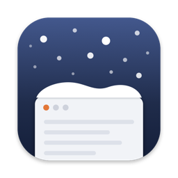

LapaLapa, ekranına kar yağdıran küçük bir Mac uygulaması. Kar pencerelerinin üstüne birikir, sen çalışmaya devam edersin. Lapa is a small Mac app that lets snow fall across your screen. It piles up on top of your windows while you carry on working.
7 gün ücretsiz deneTry free for 7 days Satın al — 6,99 $Buy — $6.99macOS 13 ve üzeri · Apple silicon ve Intel · üyelik yok, kart istemez macOS 13 or later · Apple silicon and Intel · no account, no card
Uygulamanın gerçek görüntüsü: kar pencereye birikir, yavaş taşıyınca onunla gelir, sallayınca dökülür. Real footage of the app: snow settles on a window, rides along on a slow drag, falls when you shake it.
KurulumSetup
Lapa.dmg dosyasını indir ve aç.Download Lapa.dmg and open it.
Lapa'yı Applications klasörüne sürükle, sonra çift tıkla.Drag Lapa into Applications, then double-click it.
Menü çubuğunda bir kar tanesi belirir. Bütün ayarlar orada.A snowflake appears in the menu bar. Every setting lives there.
Sıcak pencereWarm window
Kullandığın pencere sıcak kalır. Dokunmadıkların kar tutar; hangisini ne kadar ihmal ettiğini bir bakışta görürsün. The window you are using stays warm. The ones you leave alone gather snow, so you can see at a glance what you have been neglecting.
SüpürSweep
İmleci birikintinin içinden geçir, kar savrulup aşağı dökülsün. Yağan taneleri de iter. Run the pointer through a drift and the snow scatters and falls. It nudges the falling flakes too.
Kar topuSnowball
İmleci pencerenin üstündeki kar boyunca yavaşça it: kar toplanıp topa dönüşür, yuvarlandıkça büyür, kenardan düşünce dağılır. Push the pointer gently along the snow on a window: it gathers into a ball, grows as it rolls and bursts when it drops off the edge.
Yavaş itersen yuvarlar, hızlı savurursan süpürürPush slowly to roll, swipe fast to sweepSüslü çamDecorated tree
Işıkları yanıp sönen küçük bir çam öndeki pencerenin üstünde durur ve pencereyle birlikte gezer. Pencereyi sallarsan takla atıp düşer, düştüğü yerde yeniden doğrulur. A small fir with twinkling lamps stands on the front window and rides along with it. Shake the window and it tumbles off, then rights itself wherever it lands.
Menü → “Çamı bu pencereye taşı”Menu → “Move the tree to this window”TeleferikCable car
Ekranın üstünden öndeki pencereye bir halat gerilir, küçük bir kabin gidip gelir. Pencereyi taşıdıkça halat da peşinden gelir. A cable runs from the top of the screen to the front window and a small gondola rides up and down it. Move the window and the cable follows.
Menü → “Öndeki pencereye teleferik”Menu → “Cable car to the front window”Kardan adamSnowman
Yerde yeterince kar birikince ortaya çıkar: üç top, dal kollar, havuç burun, atkı ve bere. İmleçle hızlıca vurursan dağılır. Once enough snow has settled he appears: three balls, twig arms, a carrot nose, a scarf and a knitted hat. Swipe through him and he scatters.
Menü → “Şimdi kardan adam yap”Menu → “Build a snowman now”Kar küreyiciPlough
Ekranın altındaki kar derinleşince küçük turuncu bir küreyici geçip temizler, karı önüne savurur. When the snow along the bottom of the screen gets deep, a small orange plough drives through and clears it.
Menü → “Küreyiciyi şimdi gönder”Menu → “Send the plough now”Buz ve ışıklarFrost and lights
Bilgisayara dokunmazsan kenarlardan buz kristalleri ilerler; fareyi oynatınca bir anda çözülür. İstersen menü çubuğunun altına renkli bir ışık dizisi de as. Leave the Mac alone and ice creeps in from the edges; move the mouse and it clears at once. You can hang a string of coloured lights under the menu bar too.
Dört mevsimFour seasons
Kar sevmiyorsan sahneyi değiştir: pencerelerde sıçrayan yağmur, sonbahar yaprakları ya da bahar çiçekleri. Not a winter person? Change the scene: rain that splashes on your windows, autumn leaves or spring blossom.
Ya da bir şehir seç, Lapa oranın gerçek havasını takip etsin: kar yağıyorsa kar, yağmur yağıyorsa yağmur. Or pick a city and let Lapa follow its real weather: snow when it snows, rain when it rains.
Rahatsız etmezStays out of the way
FiyatPrice
7 gün boyunca her şey açık ve ücretsiz. Abonelik yok.Everything is unlocked and free for 7 days. No subscription.
Ücretsiz denemeyi indirDownload the free trial Satın alBuy LapaLapa henüz Apple noter onayından geçmedi. Sistem Ayarları → Gizlilik ve Güvenlik bölümünü aç, en altta Lapa için “Yine de Aç” düğmesine bas. Lapa has not been notarized by Apple yet. Open System Settings → Privacy & Security and press “Open Anyway” for Lapa near the bottom.
Menü çubuğundaki kar tanesine tıkla. “Kar yağsın” işaretli, Sahne “Kar” olmalı ve “Pencerelerin arkasında yağsın” kapalı olmalı. Click the snowflake in the menu bar. “Let it snow” should be ticked, Scene should be “Snow”, and “Fall behind the windows” should be off.
Çizimi ekran kartı yapar; bir işlemci çekirdeğinin küçük bir kısmını kullanır. İstediğin an menüden duraklatabilirsin. It draws with the graphics card and uses a small share of one processor core. You can pause it from the menu at any time.
Yalnızca yazdığın şehrin yaklaşık koordinatını (10 km hassasiyetle), yalnızca Norveç Meteoroloji Enstitüsü'nün açık hava servisine. Hava verisi: MET Norway. Only the rough coordinates of the city you type (to about 10 km), and only to the Norwegian Meteorological Institute's public forecast service. Forecast data from MET Norway.
Kar durur, menü lisans anahtarı girmeni ister. Mac'inde başka hiçbir şey değişmez. The snow stops and the menu asks for a licence key. Nothing else on your Mac changes.